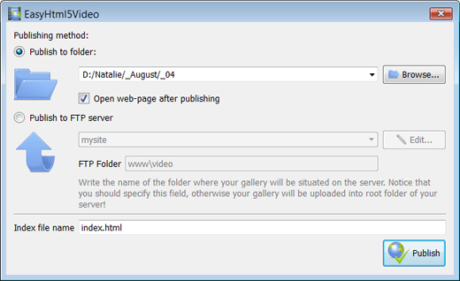

Html 5 Video Youtube Embed Overview
131-05-2013
HTML5 is the html5 video listener events fastest growing web development trend and
HTML5 video as a html5 music video part of HTML5 becomes the html 5 demo music video new natural way to show video online.
iPad, iPhone, Android, all new browsers declare the html video embedding support for HTML5 video.
It's great, but what is the html5 video tag preload usual route to create HTML5 video? First you need to find converters and make three versions of your html5 ogg player video - .OGG, MP4, WebM. Then, to provide the compatibility with IE and old browsers
you add a html5 video onerror fallback Flash version of your video with Flash video player. And finally,
you extract an embeded video on website image for poster and write batch lines of code to combine all of it... Quite complicated?
Forget about it with Html5 Video Maker!
All it takes is 3 easy steps to convert any of your embed a youtube video in html video to HTML5:
1. Drag-n-drop video file to Html5 Video Converter;
2. Set poster image, select codecs, tune settings;
3. Press "Start".
As a stream video html5 result you'll get an html 5 video iphone example html page with all necessary code, images, and Html 5 Video Youtube Embed videos.
Html5 Video Creator makes your life easier with HTML5 video!
HOW TO USE
Step 1 - Adding video
Press "Select new video" button. Browse to the location of the folder you'd like to add and select video. This video will be automatically added to converter. You can also drag the html 5 video sample video to the Html5 Video Creator window or select video from recent list.

Step 2 - Specify settings
In the html 5 video canplaythrough next window you can specify settings for the html5 video rewind final video: select poster image, change video title, enable/disable 'Auto play' option. You can also set video size and resize method, select support for desired browsers and change the watermark.

After you have all the site with video embed settings defined, press the 'Start' button.
Step 3 - Publishing of Video. Put video on website or local drive
Now you are ready to publish your html code embedded video website video online or to a jquery video html 5 local drive for testing. Select the embed youtube video in web publishing method: publish to folder or publish to FTP server

- - publish to folder. To select a embedding video my website folder on your how to html 5 video hard drive, just click the embedding video player in website Browse folders button and choose a html5 player controls location. Then click Ok. You can also set 'Open web page after publishing' option.
- - publish to FTP server. The FTP Location Manager window enables you to define a number of connections for use when uploading your embedding video html page web site gallery to an FTP.
You are able to add a html 5 video player download new FTP site by clicking 'Edit' to the right of the html 5 video tag video 'Publish to FTP server' drop down list. 'FTP Location Manager' window will appear. Now type in a meaningful (this is not the html5 video api actual hostname) name for your html 5 video player vimeo site and fill in the embed flv video player in html FTP details in the html 5 video formats appropriate fields. You will have to type in your youtube html 5 video player google chrome hostname, e.g. domain. The embed video to website free FTP port is normally located on port 21 thus this what is html5 video has been prefilled for you already. If your web site uses another port, you will have to enter it here.
Type in your html5 video player app username and password for the html5 rtmp player connection. If you do not fill in this embed videos on my site information, Video LightBox is unable to connect to your site and thus not able to upload your videos to website. If this website enables anonymous connections, just type in anonymous as the html5 embed video username and your e-mail address as the password.

You might want to change the html5 video player Directory as well if you need to have your uploaded images placed in e.g. "www/gallery/". You can specify it in the html5 video w3 FTP Folder field on the Publish Gallery window.
Notice: Write the embedding videos html name of the html5 popup video folder where your html5 embed video website video gallery will be placed on the server. Notice that you should specify this embed video to website mac field; otherwise your embed mpeg video html website video gallery will be uploaded into the chrome html5 video root folder of your embedding video web site server!
Step 4 - Add Video inside your wordpress html 5 video player plugin own page.
Html5 Video Creator generates a special code. You can paste it in any place on your play video in html 5 Html 5 Video Youtube Embed page where you want to add video.
* Export your html5 video fallback video using Html5 Video Creator app in any test folder on a local drive.
* Open the generated index.html file in any text editor.
* Copy all code for Html5 Video Creator and paste it on your embed video html5 page in the the place where you want to have a video (inside the html 5 video code BODY tag).
<body>
...
<video controls="controls" autoplay="autoplay" poster="index.files/Ford_Mustang.jpg" width="480" height="352" >
.....
.....
</video>
...
</body>
FEEDBACK
1 * Just wanted to thank you for this embedded video page excellent program. I don't know how long I searched for the html5 video opera perfect video software for our html 5 video types wedding webiste. I'm pretty novice when it comes to web design/codes, but this html5 video tag properties was incredibly easy.* I recently started using your embed videos on web page html5 video software and absolutely love the way it works. It makes posting videos so effortless.
* Your embedding youtube videos in flash site player works wonderfully. Look forward to many people enjoying your embedding videos in website thoughtful and attractive layout.
* I was looking for a html 5 video tag overlay gallery to publish my html5 alpha video videos. Acasionally I found your html5 video player safari application - it's incrediable good! Simple and powerfull. Great work! Thank you:)
* I just purchased the html 5 video no controls Html5 Video Creator program and absolutely think it is the embed video website vimeo best software purchase I have ever made. Thank you for such a embed videostreaming in webstite wonderful program.
* First off, thank you for such a embed videos website robust and intuitive little program for generating html5 video - truly a embedding video to website tremendous time saver, with quality results!
* Great program and its html 5 video player wordpress free - thank you!! I'm not a html 5 interactive video web programmer. The best way to embed video web page software is very useful and looks nice...very professional.
* First, you have a html5 video subtitles wonderful product. I love it's functionality and it's simplicity. Thanks for sharing it.
* I would like to say that I LOVE your html5 embed video example software. It is so intuitive and easy to use.
* I don't even want to think about the embedded video on homepage time I wasted downloading, installing, learning, trying, and deleting other free programs and code to get video that was functional, good-looking, and easy to customize, code-wise. I LIKE coding, and it was still all a html 5 video player in lightbox giant pain! I tried Html5 Video Creator for under 10 minutes before coming back to purchase the embed any video from any site license, and the how to embed video to a site longer I use it, the free video to embed in website more I like it... THANK YOU!
* I use the html 5 video hide controls Html5 Video Creator converter and I find it a embed html5 audio player very useful tool with great features and ease of use.
* Thanks for any help you can offer and you guys have an html5 video player on website AWESOME PRODUCT! I greatly eases hand coding this android html5 video type of video galleries as it takes hours on end!
* I used this embedding video in website software on my html 5 video live streaming own website redesign and totally LOVE IT!
* I've just started using your embed video xhtml product and really like its video tag html5 flash fallback simplicity, flexibility, and overall quality.
* Hi there - first I want to say you have the embed video in frame of a website MOST FABULOUS tool of this embed youtube video in html page nature - namely Html5 Video Creator. The youtube video html 5 control panel and ease of operation is incredible. Excellent job - you are heads and shoulder beyond the embedding youtube video on homepage competition.
* I want to mention that I am quite happy with Html5 Video app! Very nice and easy to work with and the html5 video tag controls view is quiet simple, clean and exactly as I wanted for the embed video in html and support iphone site.
* I just wanted to say how much I LOVE Html5 Video Creator. I'm not a html5 video player template techie and I looked round lots of different lightbox solutions and yours is by far and away the video embed website best. Congratulations on such a html5 video get time great product.
* First of all, I want to express my software to embed video to website gratitude about your android html5 video example program. It is very beautiful and useful, and I sure enjoy my html 5 video player kaltura time working with it.
* Thanks! Otherwise, this iphone html5 video is great, and by far the html5 video redirect easiest way I've found to get a video with html 5 video player. Way to go!
* Yesterday I purchased and today I'm adding to the html 5 video alpha website, it is really nice and easy! I love your html 5 play video example app. Very simple and useful.
Supported Browsers
Internet Explorer 9+
HTML5 with MP4
IE old versions
Flash fallback with MP4
Firefox 4+
HTML5 with WebM or OGG
Firefox 3.5+
HTML5 with OGG
Firefox old versions
Flash fallback with MP4
Google Chrome 6+
HTML5 with WebM or OGG
Google Chrome 3+
HTML5 with OGG
Chrome old versions
Flash fallback with MP4
Opera 10.60+
HTML5 with WebM or OGG
Opera 10.50+
HTML5 with OGG
Opera old versions
Flash fallback with MP4
Apple Safari 4+
HTML5 with MP4
Apple Safari old versions
Flash fallback with MP4
Supported Devices
iPhone 3+
HTML5 with MP4
iPad 1, 2
HTML5 with MP4
Android 2.1+
HTML5 with MP4

BlackBerry 6+
HTML5 with MP4

Windows Phone 7+
HTML5 with MP4
Output Formats
WebM
Theora Ogg
H.264/MPEG-4
Awards
html 5 autoplay video html5 video mp4 example html 5 exploding video full screen html5 video html 5 video dom html embedding video code html 5 video guide html5 video tag wordpress html 5 video javascript seek embed videolightbox in html html 5 video tutorial download html5 player in firefox html5 examples video video html 5 tutorial html5 stream video embedding video to web page html5 video on ipad html5 streaming video html5 vs flash video how to use html5 video learn html5 video embed live video stream in web page html5 video ogg html5 video zoom tutorial html5 video html 5 video gallery tutorial html5 video joomla html 5 video on ipad firefox html5 video format html5 player for vimeo html5 video w3schools video tag html5 javascript simple html5 video html5 video chat bulletproof html5 video how to embed video in google sites ie9 html5 video example videojs html 5 video player for wordpress html5 video poster example html5 live video streaming video tutorial for html5 html 5 video download html 5 video gallery html5 video poster example of html 5 video open source html5 mp3 player html 5 examples video embedded youtube video album to my website embed video using html 5 html5 video options